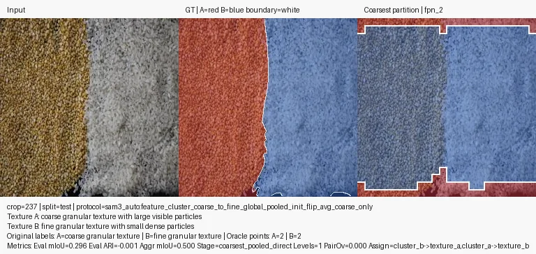
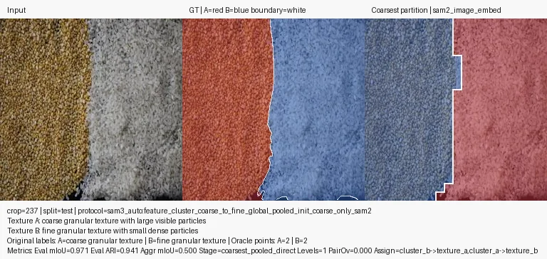
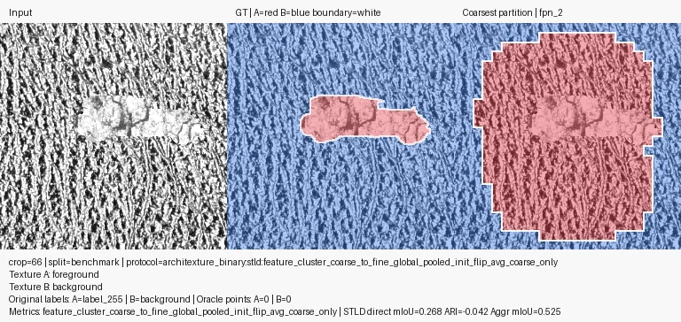
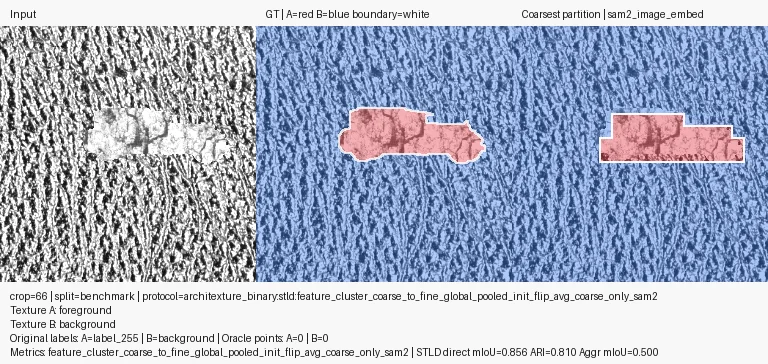
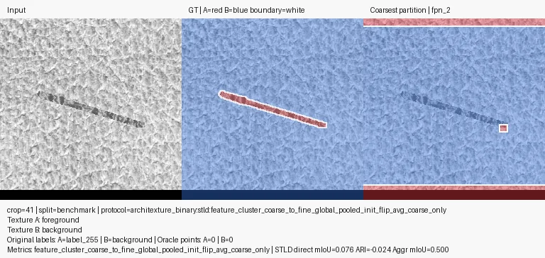
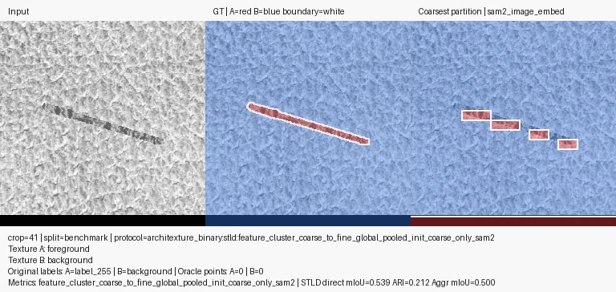
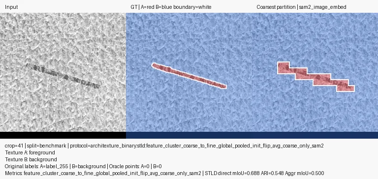
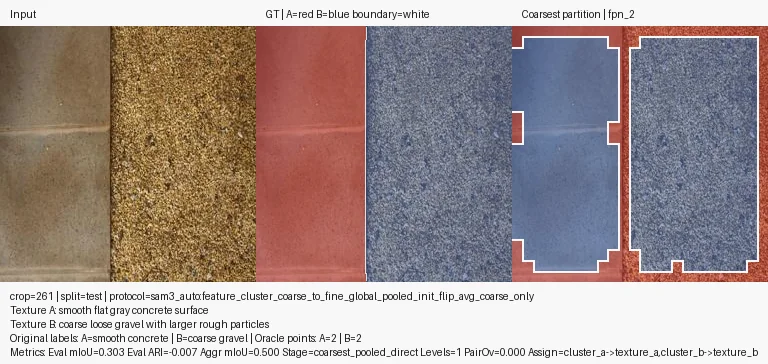
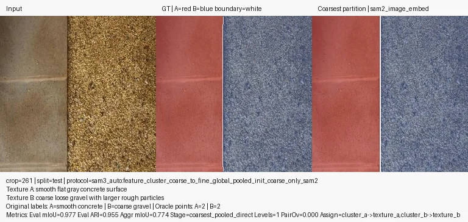

SAM2 vs SAM3 Frozen Feature Clustering for Binary Texture Partitioning
A lightweight qualitative subset built from the run-emitted visual triptychs. This gallery is intentionally curated to show the route-level story, not to publish every sample.
This granular crop has a narrow central light band flanked by two different coarse textures. SAM2 coarse tracks the split cleanly, while the comparable SAM3 flip-avg run collapses the center into a broad blob.

RWTD · SAM3 flip_avg
mIoU 0.2957 · ARI -0.0009

RWTD · SAM2 coarse_only
mIoU 0.9705 · ARI 0.9411
stld gainSTLD · crop 66
STLD: Both SAM2 Variants Recover the Object
On this compact synthetic foreground, both SAM2 variants recover the object cleanly. The SAM3 flip baseline expands into a large false-positive disk instead.

STLD · SAM3 flip_avg
mIoU 0.2680 · ARI -0.0421
STLD · SAM2 coarse_only
mIoU 0.8555 · ARI 0.8099

STLD · SAM2 flip_avg
mIoU 0.8555 · ARI 0.8099
thin structureSTLD · crop 41
STLD: Thin Structure Favors the SAM2 Variants
The thin oblique strip is a harder shape. SAM2 coarse recovers part of it, SAM2 flip captures more of it, and the SAM3 flip baseline nearly collapses the signal.

STLD · SAM3 flip_avg
mIoU 0.0764 · ARI -0.0241

STLD · SAM2 coarse_only
mIoU 0.5386 · ARI 0.2118

STLD · SAM2 flip_avg
mIoU 0.6885 · ARI 0.5477
galleryRWTD · crop 261
RWTD: Another Strong Texture Split
SAM2 coarse separates smooth concrete from coarse gravel and the neighboring red slab cleanly; the SAM3 flip baseline merges the scene into two broad low-fidelity regions.

RWTD · SAM3 flip_avg
mIoU 0.3032 · ARI -0.0071

RWTD · SAM2 coarse_only
mIoU 0.9772 · ARI 0.9553
gallerySTLD · crop 2
STLD: Another Synthetic Foreground Win
A second thin foreground example. Both SAM2 rows remain stable, while the SAM3 flip baseline overfills a large surrounding region.